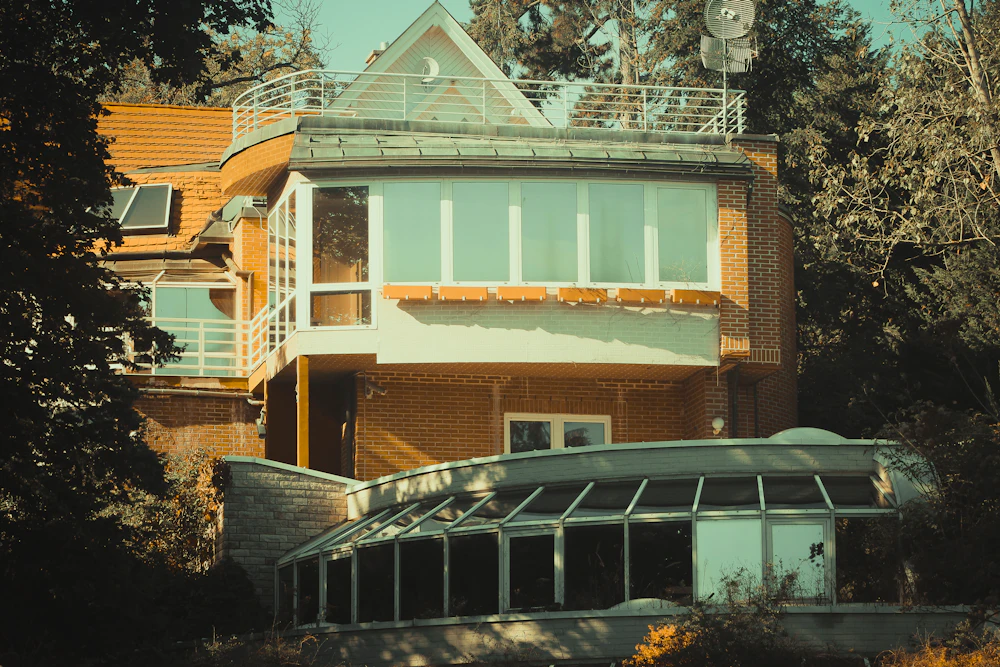

01
Particuliers
Une véranda, une verrière, un pignon vitré ou des Velux ne se nettoient pas depuis une échelle. Nous intervenons avec le matériel adapté, de la perche télescopique aux travaux sur cordes selon la hauteur.
Pour une simple vitre de plain-pied, notre intervention n'a pas d'intérêt économique et nous le dirons.
- Vitres et baies vitrées
- Vérandas et verrières
- Velux et fenêtres de toit
- Panneaux solaires